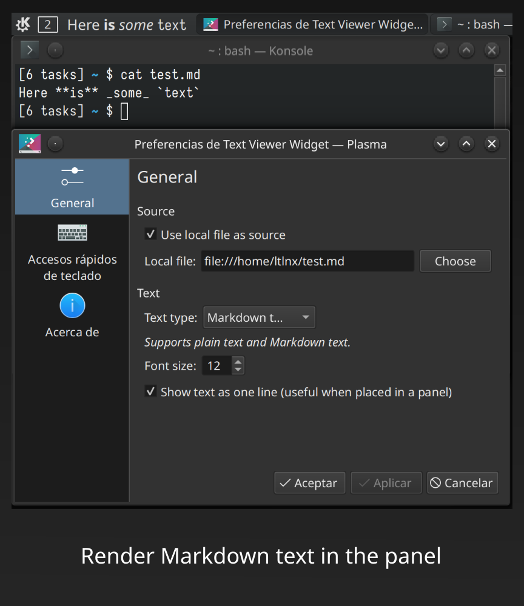
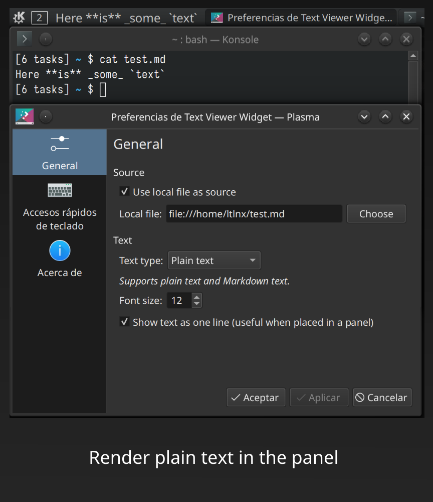
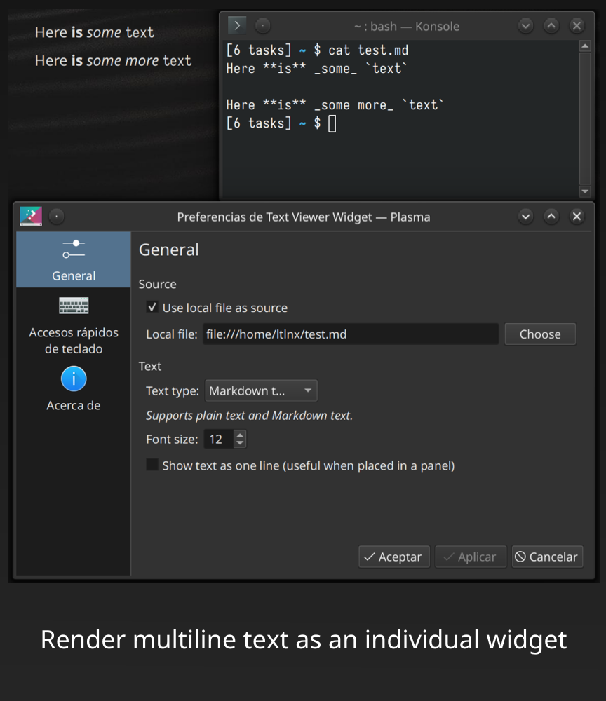
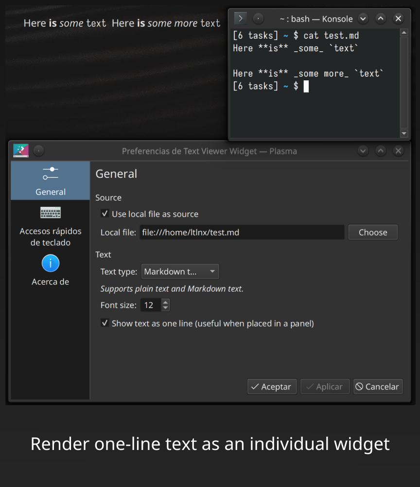

KDE Plasma Applet: Text Viewer Widget
One day I was thinking, “How great would it be if I could show a status-like banner in the panel!” The closest thing I could find, Rich Text Viewer, didn’t quite cut the chase as its font size and applet size are largely fixed and doesn’t change based on its content. So I took the opportunity to learn a bit of QML and write my own widget.
This widget shows text from any online/offline source, and refreshes when clicked. It supports plain and Markdown text, and can switch between displaying normally (as a widget) and as one line (as a panel item).
|  |  |
|  |  |
Settings:
- Whether to use a local file as the source: when checked, a “Choose” button would allow you to choose local files.
- Text type: choose between plain and Markdown text.
- Font size
- Show text as one line: if checked, the loaded text would ignore newlines and render everything as one line.
Download: Item link on pling
Last updated: 2023-01-02